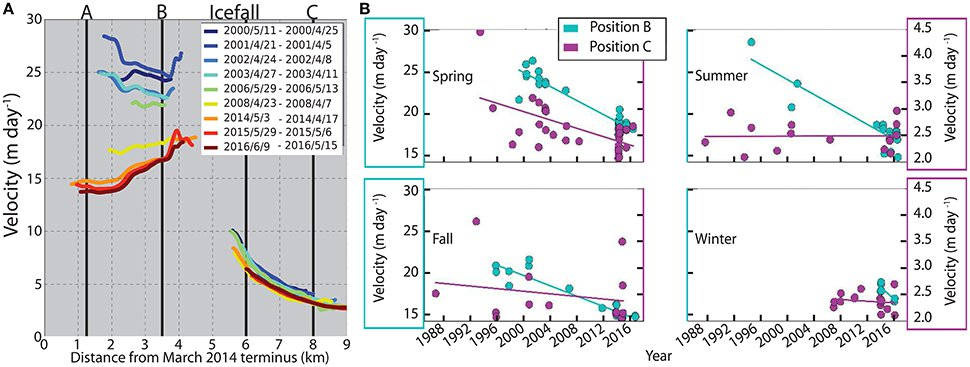

While glacier advance is extremely rare, study of advancing glaciers offers a more complete picture of glacier dynamics and the factors that enable such advances. In Alaska, Yahtse Glacier is the fastest advancing glacier. After a 40-km 20th century retreat, it has advanced 2.5 km since 1990, and is thickening by several meters per year over its terminus. During this advance, the terminal stresses have transitioned from tensile to compressive, and the driving stresses have dropped by a factor of 3. All of these changes at the Yahtse terminus have occurred despite net mass loss over the entire Yahtse Glacier basin, reflected by thinning in the upper reaches of the glacier.


We suggest that continued growth and progradation of a submarine morainal bank, and a steep icefall which dynamically isolates the terminus region from the upper basin, are critical for the sustained advance of Yahtse Glacier.
This work was led by Joey Durkin, a Ph.D. student at Cornell University, and published in Frontiers in Earth Science.